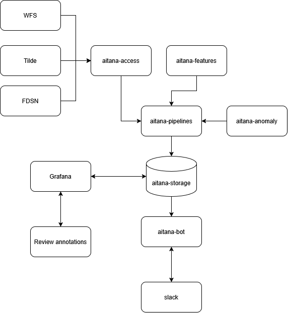

Links
AI / Agents
Aitana: a human-in-the-loop framework for volcano monitoring
Aitana (named after the great football midfielder Aitana Bonmatí) is a prototype framework for building, validating and operating AI/ML methods in volcano monitoring.
Aitana is a human-in-the-loop system with packages for data access, feature computation, storage, modelling and evaluation as separate, independently installable pieces.
It is a monorepo of small Python distributions sharing one import namespace (aitana.). Install only the parts you need; use them together as one system.
The vision

(The diagram source is aitana.json, editable with draw.io.)
The target system is a closed loop, with aitana-storage as the hub:
- Ingest —
aitana-accesspulls observations from GeoNet’s Tilde API, the WFS earthquake catalogue and FDSN/S3 waveform archives. - Compute —
aitana-featuresturns waveforms into features (RSAM, SSAM, DSAR, spectral and complex-trace attributes). It never fetches; it takes data in and returns results out. - Store — everything lands in
aitana-storageas NetCDF/Zarr archives. It comes with a FastAPI endpoint that can serve datasets to Grafana. - Detect —
aitana-anomalyruns a panel of state- and anomaly-detection algorithms over the stored features, each producing a comparable[0,1]anomaly index rather than one method being anointed as “the” detector. - Run & evaluate —
aitana-pipelinescombines the layers below into reproducible Snakemake workflows: operational runs that feed alerts, and evaluation runs that score methods against real eruption catalogues and synthetic fault injection. - Communicate — workflows store an alarm series next to each anomaly index, and Grafana alerting posts to Slack when it is raised.
aitana-bot(planned) is a Slack bot for investigating further. It can also draft a daily “volcano weather report” and assists duty officers with on-demand eruption confirmation. - Close the loop — a human expert reviews what the system flagged. Their annotations flow back into
aitana-storageas confirmed or revised labels, becoming ground truth for the next round of training and evaluation. Grafana provides the visual front end for that review.
Package status
| Distribution | Import package | Role | Status |
|---|---|---|---|
aitana-storage |
aitana.storage |
NetCDF/Zarr feature archives, HTTP API, PyTorch datasets, Grafana annotations | Working (0.1.1) |
aitana-access |
aitana.access |
Pure I/O: Tilde, WFS, FDSN/S3/SDS waveforms | Working (0.1.2) |
aitana-features |
aitana.features |
RSAM, SSAM, DSAR, spectral & complex-trace features | Working (0.1.0) |
aitana-volcanoes |
aitana.volcanoes |
Ruapehu & Whakaari domain aggregates, eruption catalogues, Kalman fusion | Working (0.1.0) |
aitana-pipelines |
aitana.pipelines |
aitana-pipelines CLI, scoring, plotting, Snakemake workflows |
Working (0.1.0) |
aitana-anomaly |
aitana.anomaly |
State & anomaly detection expert panel | Partial — see Implementation status |
aitana-testing |
aitana.testing |
Synthetic waveforms with known spectral content for tests | Working (0.1.0) |
aitana-bot |
aitana.bot |
Planned: interactive Slack companion, VAB drafting, eruption confirmation | Stub (0.1.0) |
Installation
Each distribution installs independently with its own narrow dependency set — installing aitana-features gets you numpy/scipy/obspy, not the FDSN clients or storage backends:
pip install aitana-storage # feature archives + HTTP API only
pip install aitana-features # feature computation only
pip install aitana-access # I/O only (pulls storage)
pip install aitana-volcanoes # per-volcano aggregates (pulls access + features)
pip install aitana-pipelines # workflow CLIaitana-anomaly is not published yet — install it from the workspace (see Development setup).
They share the aitana. namespace, so installing several gives you import aitana.access, import aitana.features, and so on. There is no parent aitana distribution.
Running workflows
The aitana-pipelines command drives Snakemake workflows bundled with Aitana or registered by third-party packages:
aitana-pipelines list # see what workflows are available
aitana-pipelines run whakaari ./results # run the Whakaari Bayesian-network benchmarkRunning workflows covers the commands, the bundled workflows and how to register your own.
Documentation
The documentation has a user guide, the API reference for every aitana.* package, and developer notes on the architecture, implementation status and roadmap.
Get in touch
Report bugs, suggest features, view the source code, and ask questions on GitHub.